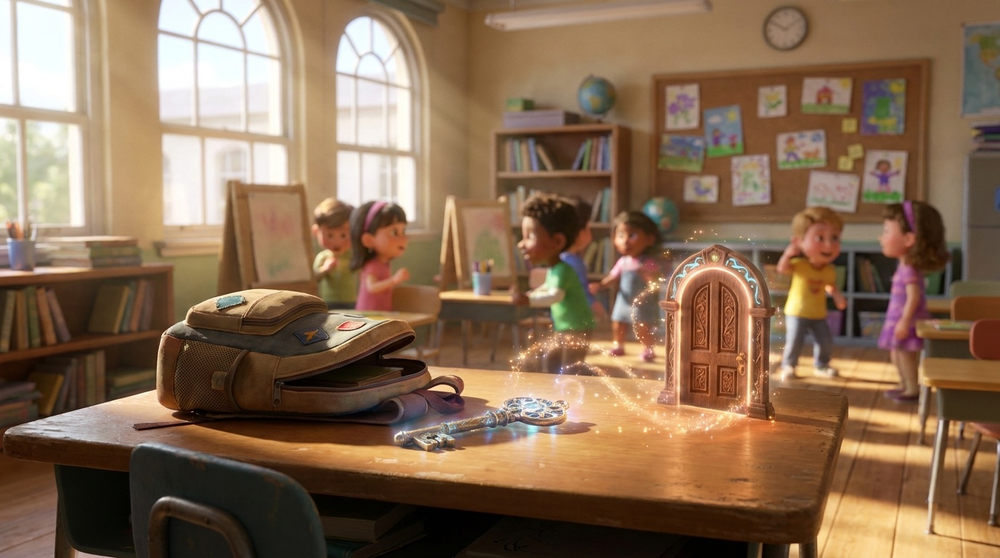

Capitolo 1
La Chiave e la Porta sul Banco
C’era una volta un ragazzo che trovò uno strano zaino abbandonato. Dentro lo zaino, tra tasche segrete, c’era una chiave dorata e intarsiata con simboli misteriosi.
Il ragazzo provò tutte le serrature possibili, ma non trovò nessuna porta in cui farla entrare. Finché, il giorno dopo a scuola, durante la pausa... apparve qualcosa di incredibile: proprio sopra la superficie di legno del suo banco, era spuntata una porticina magica luminosa!